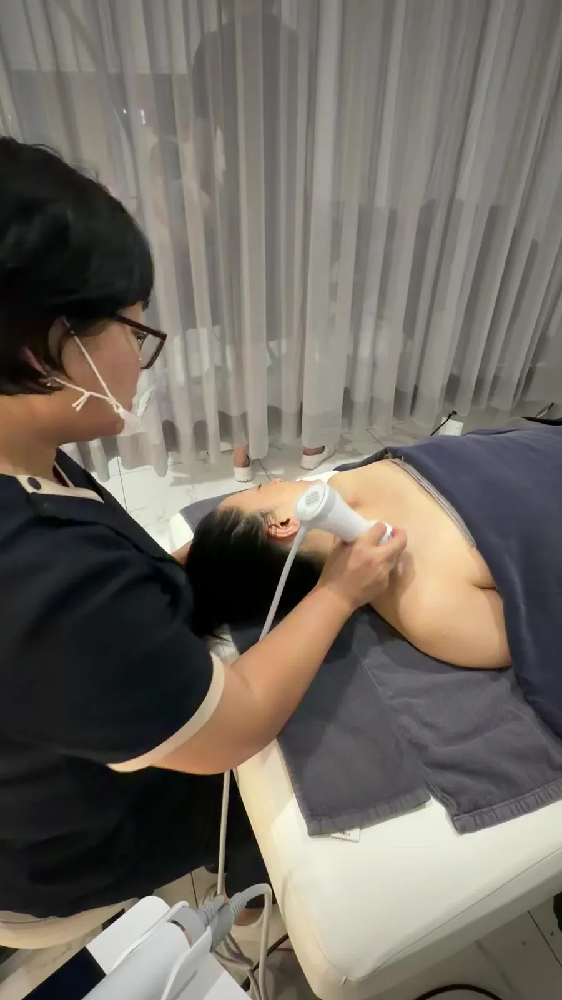
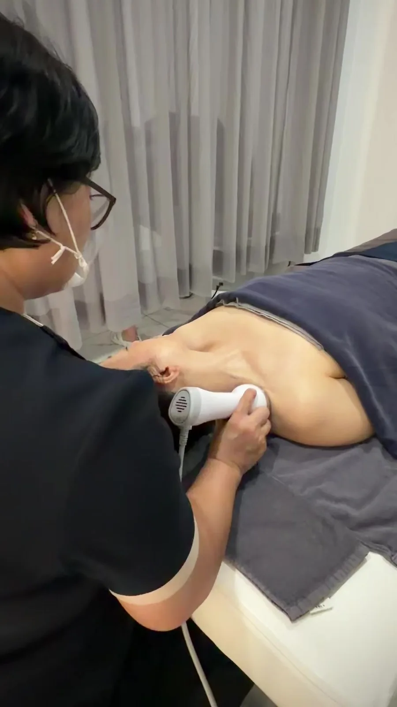

관리 전, 원장이
직접 진단합니다
얼굴 비율과 좌우 균형, 근육의 긴장도를 먼저 분석하고 지금 필요한 관리만 제안합니다.
흩어진 균형을 제자리로 돌려놓는 것. 아르쎄가 26년간 지켜온 관리의 기준입니다.
FACE CONTOUR, REBALANCED
얼굴을 더하지 않습니다.
흩어진 균형을 제자리로 돌려놓습니다.
처음에는 느리지만, 시간이 갈수록 가속도가 붙는 변화.
DIAGNOSIS FIRST
진단이 먼저입니다
대표원장의 1:1 진단 후 필요한 관리만 제안합니다.
ANATOMY BASED
해부학에 근거합니다
근육과 근막의 구조를 따라 관리하는 조막얼굴메소드®
WELL AGEING
시술 없이 아름답게
본래의 균형을 회복하는 웰에이징 관리
밝고 깨끗한 공간에서, 관리에만 집중하세요.
얼굴 비율과 좌우 균형, 근육의 긴장도를 먼저 분석하고 지금 필요한 관리만 제안합니다.
프랑스 LPG®, 스페인 Termosalud 등 검증된 장비를 손기술과 함께 설계해 관리의 깊이를 더합니다.

상담부터 관리, 사후 홈케어 가이드까지 한 분이 책임집니다.

원장이 직접, 처음부터 끝까지 관리합니다.
상담부터 관리, 사후 홈케어 가이드까지 한 분이 책임집니다.